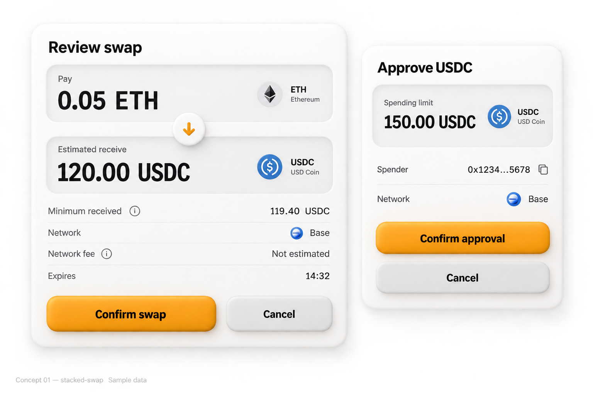
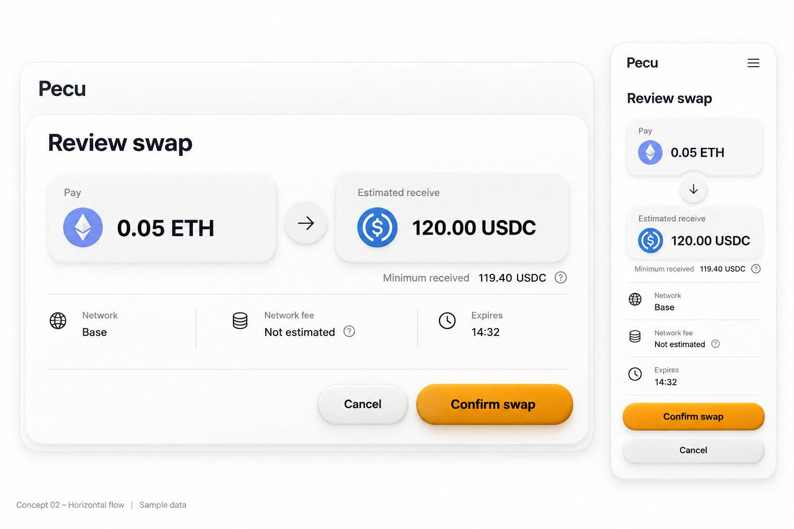
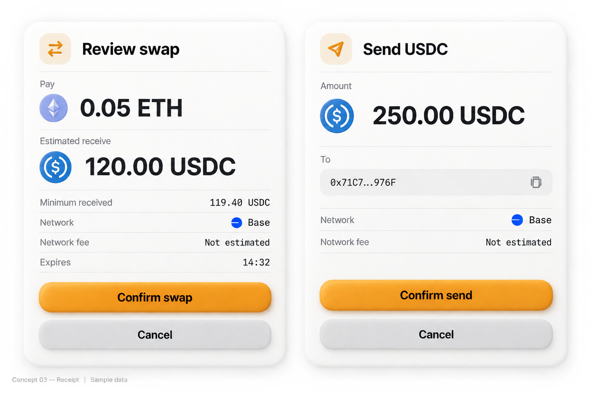
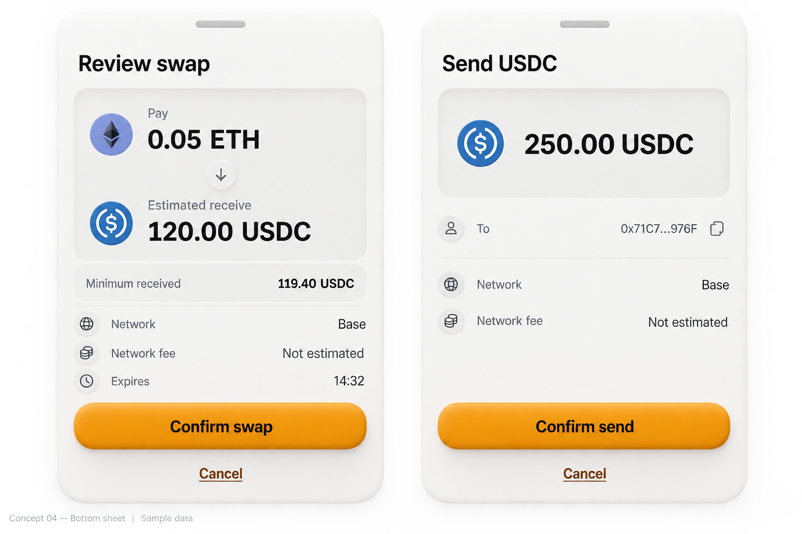
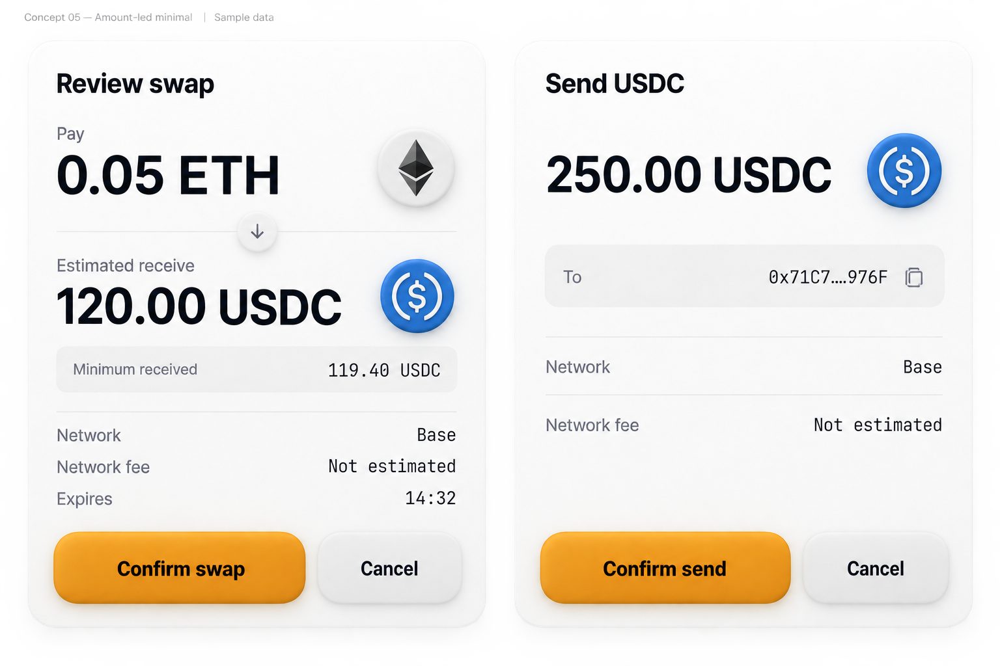
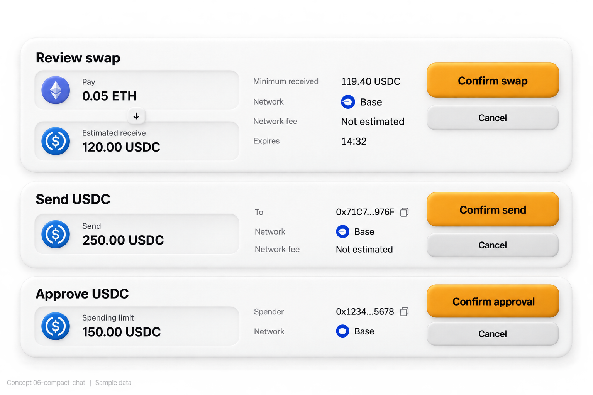
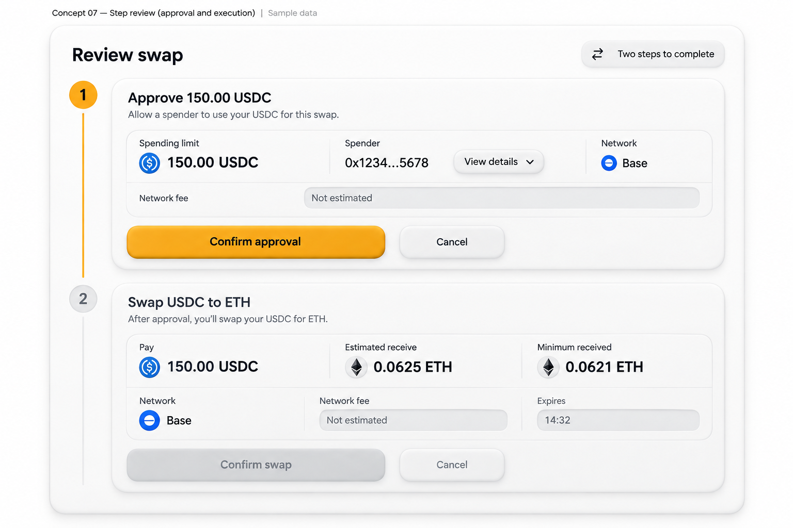
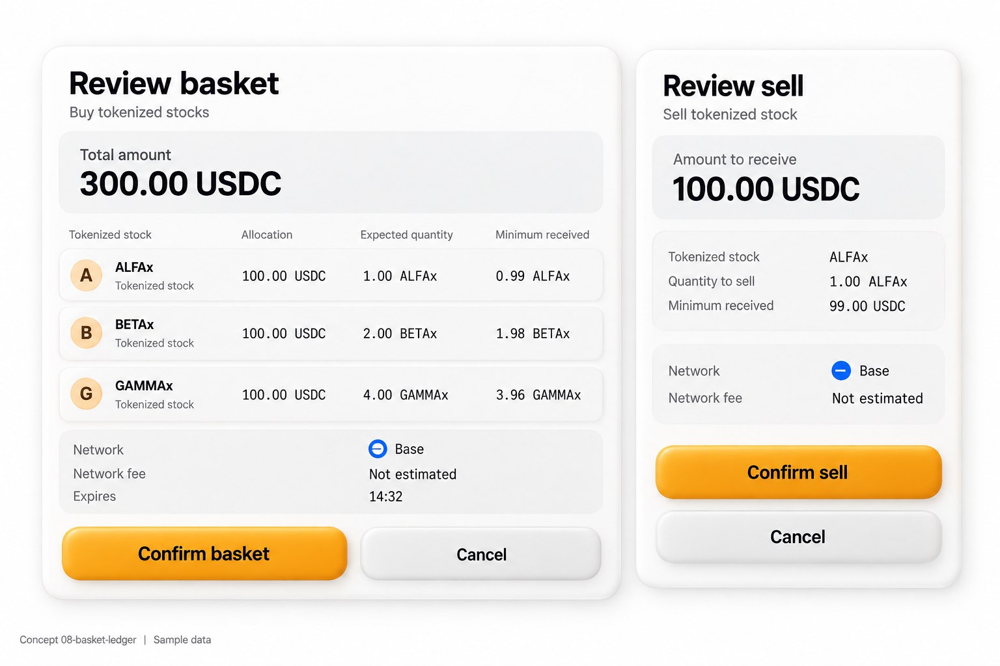
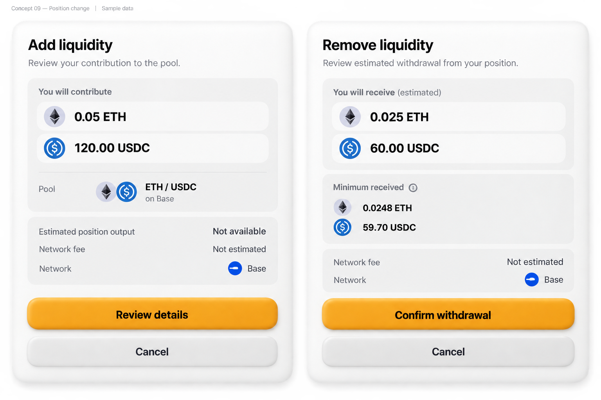
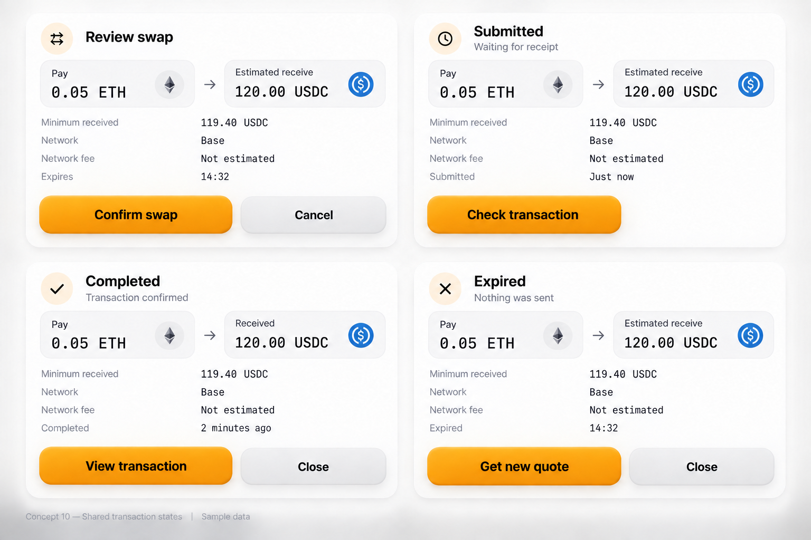

01 · Stacked swap

02 · Horizontal flow

03 · Clay receipt

04 · Mobile review sheet

05 · Amount-led minimal

06 · Compact inline

07 · Approval and execution

08 · Basket review

09 · Position change

10 · Shared transaction states
